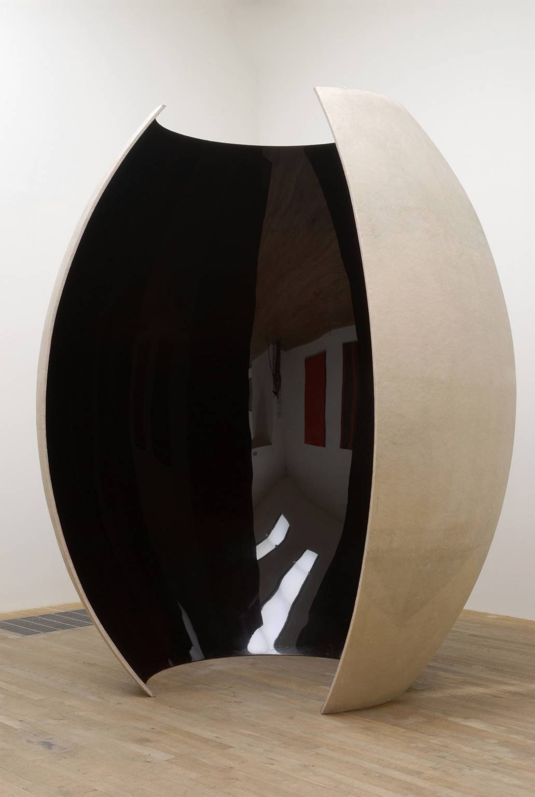
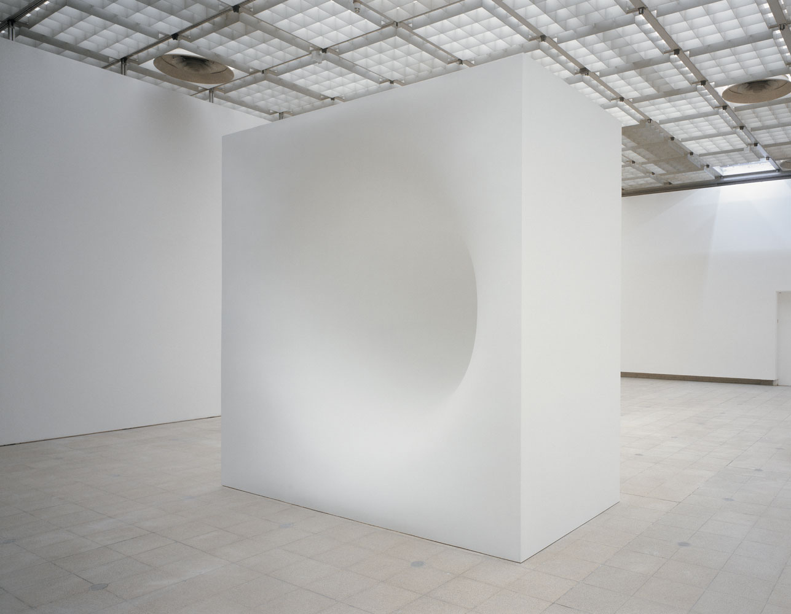
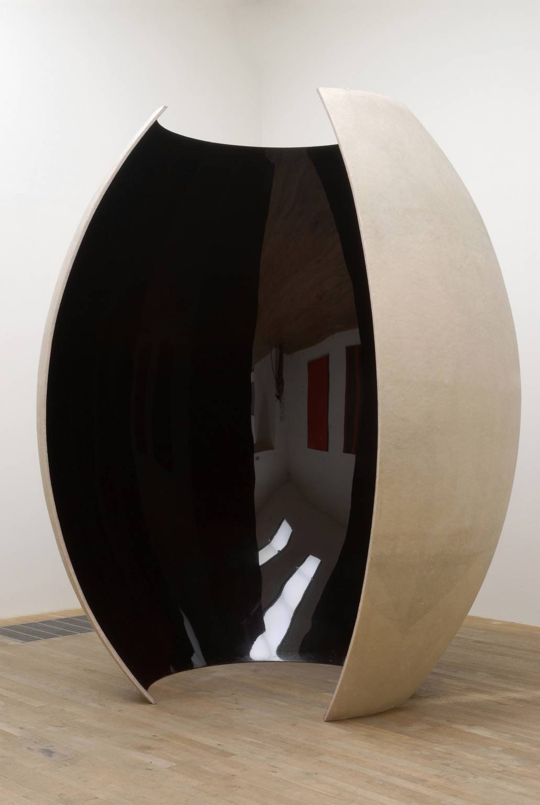
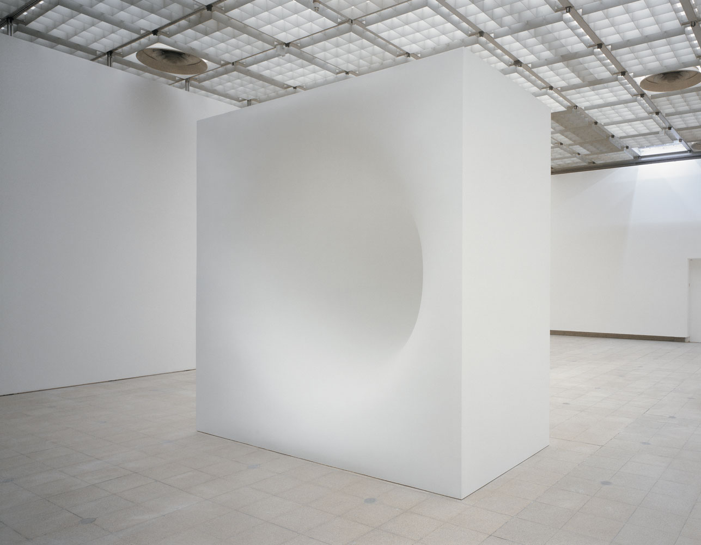

Author
John Tusa
Artist
Anish Kapoor
Media
Sculpture
Category
Transcendent
Terrifying
Natural
Darkness is a fact that we all know about, an idea about the absence of light. Very simple. What interests me however is the sense of the darkness that we carry within us, the darkness that's akin to one of the principal subjects of the sublime – terror. A work will only have deep resonance if the kind of darkness that I can generate, let's say a block of stone with a cavity in it can have a darkness, is resident in you already; that you know already. This is not a verbal connection, but a bodily one. That's why sculpture occupies the same space as your body.
 



Anish Kapoor
Image 2 - Ishi’s Light 2003; Fibreglass, resin and lacquer; Tate Modern; London, 2005.
Image 3 - White Dark IV, 1995; Fibreglass, wood and paint;
Image 4 - Descension, 2015; Steel, water, motor;